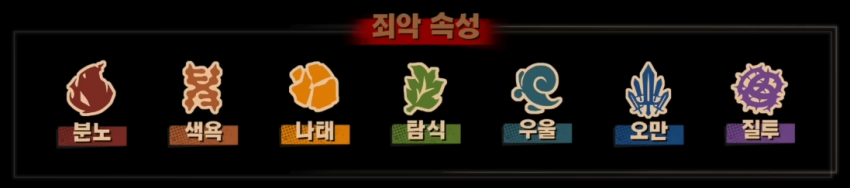

전투 시스템 (Combat)
죄악 공명 및 스킬 연결 시스템
7가지 죄악 속성
분노, 색욕, 나태, 탐식, 우울, 오만, 질투의 7가지 죄악 속성을 활용하여 적의 약점을 공략하십시오.
스킬 연결 (Chain) 시스템
수감자들의 스킬 아이콘을 패널에서 드래그하여 연결합니다. 같은 죄악 속성의 스킬을 2개 이상 연결하면 '죄악 공명'이 발생하여 위력이 증가하며, 3개 이상 연결 시 강력한 '완전 공명'이 발동됩니다.

죄악 공명 및 스킬 연결 시스템
분노, 색욕, 나태, 탐식, 우울, 오만, 질투의 7가지 죄악 속성을 활용하여 적의 약점을 공략하십시오.
수감자들의 스킬 아이콘을 패널에서 드래그하여 연결합니다. 같은 죄악 속성의 스킬을 2개 이상 연결하면 '죄악 공명'이 발생하여 위력이 증가하며, 3개 이상 연결 시 강력한 '완전 공명'이 발동됩니다.
